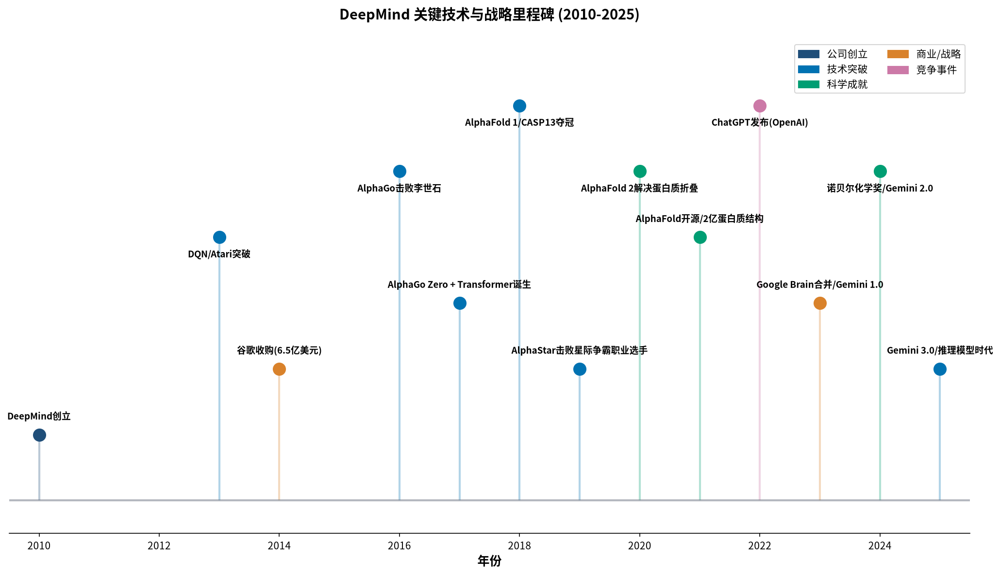
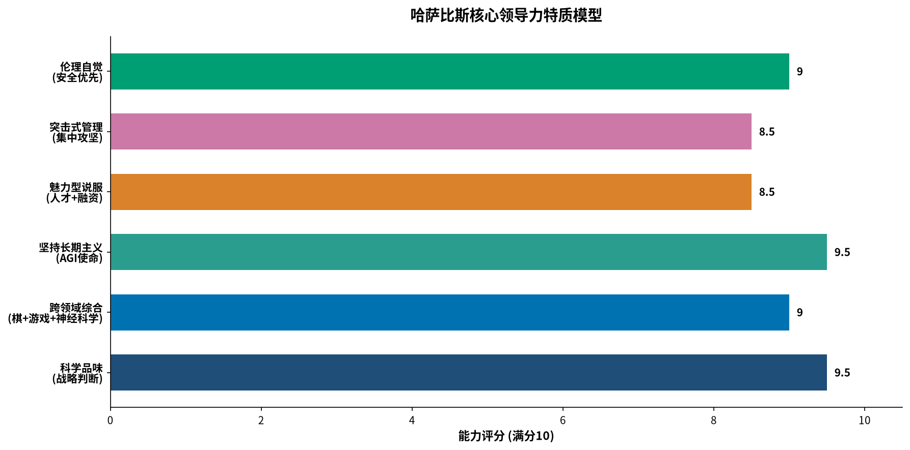

💡 阅读提示：本报告为完整深度研读版，包含逐章深度解读、核心概念解析、架构图汇总和实战借鉴指南。建议从上方目录导航快速定位感兴趣的章节，也可从头至尾系统阅读。
完成日期：2026年7月19日
原书信息：《The Infinity Machine: Demis Hassabis, DeepMind, and the Quest for Superintelligence》，塞巴斯蒂安·马拉比著，周健工译，浙江科学技术出版社/湛庐文化，2026年3月出版
德米斯·哈萨比斯用十五年时间，将一个伦敦的AI初创实验室打造为谷歌的"AI大脑"，其核心驱动力不是商业野心，而是一个近乎宗教般的科学使命——"先解决智能问题，再用智能解决一切其他问题"。 这条以强化学习为根基的技术路线，既让DeepMind在AlphaGo、AlphaFold等里程碑上遥遥领先，也使其在大语言模型浪潮中一度落后于OpenAI。书中最具反直觉的发现是：DeepMind并非不懂Transformer——这一架构本身就诞生于Google Brain——而是因为哈萨比斯坚信"智能必须扎根于行动与环境交互"，从而主动选择了一条更难但更接近通用智能本质的路径 (betaglyph) (上海证券报)。
对网络设计人员和售前工程师而言，这本书的价值在于揭示了一种"突击小组"管理模式的威力——平时给顶尖人才充分的自由探索空间，关键时刻集中全部力量在统一代码库上攻坚。哈萨比斯的"科学品味"判断力、三人组的互补性协作、以及在谷歌与OpenAI双重压力下的战略韧性，为技术管理者提供了从前沿研究到产品交付的完整方法论参考 (InfoQ) (tbpndigest)。
《哈萨比斯：谷歌AI之脑》是两度入围普利策奖的资深作家塞巴斯蒂安·马拉比（Sebastian Mallaby，代表作《风险投资史》《富可敌国》）耗时三年完成的深度传记。作者与哈萨比斯进行了超过30小时的独家对话，并采访了100多位相关人物——包括已经决裂的联合创始人穆斯塔法·苏莱曼，以及直接竞争对手OpenAI的核心科学家伊利亚·苏茨克维 (Unite.AI)。
全书共20章、480页、约29.8万字，按时间线分为三个部分，既是哈萨比斯的个人传记，也是DeepMind的发展史，更是一部当代AI革命的全景记录。
| 部分 | 主题 | 章节范围 | 核心叙事 |
|---|---|---|---|
| 第一部分 | 超级智能前夜：DeepMind如何成为谷歌的秘密武器 | 第1-8章 | 从哈萨比斯的童年到DeepMind被谷歌收购，讲述AGI梦想的起源与早期奋斗 |
| 第二部分 | AI霸主之争：OpenAI与DeepMind的双雄竞逐 | 第9-16章 | 从AlphaGo震惊世界到ChatGPT引爆全球，双线叙事展开两强竞争格局 |
| 第三部分 | 超越极限：哈萨比斯如何在智能竞赛中击败世界 | 第17-20章+后记 | Gemini反击战、AI安全困境、推理时代的到来与AGI展望 |
| 章节 | 中文标题 | 英文标题 |
|---|---|---|
| 引言 | 普罗米修斯的回声：点燃智能之火，锻造全能之机 | Introduction: The Sweetness |
| 第1章 | 人生没有备用棋局：哈萨比斯的试炼与燃烧式成长 | Chapter 1: Fate (命运) |
| 第2章 | 深刻的哲学问题：一场探索万物的游戏 | Chapter 2: "Deep Philosophical Questions" |
| 第3章 | 绝地武士：从万灵药工作室到AI的旅程 | Chapter 3: The Jedi |
| 第4章 | AI"三人组"：DeepMind英雄之旅启程 | Chapter 4: The Gang of Three |
| 第5章 | 创立DeepMind：与彼得·蒂尔的命运交汇 | Chapter 5: Starting DeepMind |
| 第6章 | 雅达利启示录：DeepMind的智力革命 | Chapter 6: Atari |
| 第7章 | DeepMind争夺战：马斯克、蒂尔、谷歌与未来的赌注 | Chapter 7: Thiel Trouble |
| 第8章 | 锚定未来：携手谷歌，AI之战一触即发 | Chapter 8: Get Google |
| 第9章 | 直觉之力：从GEB到AlphaGo，攻占人类最后的精神高地 | Chapter 9: Intuition |
| 第10章 | 逐出伊甸园：OpenAI在AI巨头博弈中横空出世 | Chapter 10: Out of Eden |
| 第11章 | 医院里的AI革命：破解智能的最高优先级 | Chapter 11: P0 Plus Plus |
| 第12章 | 从Transformer到GPT：OpenAI强势崛起 | Chapter 12: The Agent and the Transformer |
| 第13章 | 语言与自然之道的背离：第一次惜败OpenAI | Chapter 13: On Language and Nature |
| 第14章 | 马里奥计划：从阿西洛马到谷歌总部的隐秘博弈 | Chapter 14: Project Mario |
| 第15章 | 生物学界的费马大定理：AlphaFold问鼎生命科学巅峰 | Chapter 15: Fermat for Biology |
| 第16章 | 权力与荣耀：坚持做超级智能的终极守门人 | Chapter 16: The Power and the Glory |
| 第17章 | 竞赛GPT：Gemini重新定义AI大战格局 | Chapter 17: RaceGPT |
| 第18章 | "我们要完了"：科学家的警告与一往无前的AI | Chapter 18: "We're Cooked" |
| 第19章 | 步步为营：从Gemini到OpenAI o1的较量 | Chapter 19: Step by Step |
| 第20章 | Flash Thinking、DeepSeek登场：超级智能时代呼啸而来 | Chapter 20: Comeback, and Beyond |
| 后记 | 图灵的使命之眼与深度之心：我们仍在创造无限可能 | Epilogue: Turing's Champion |
核心思想：哈萨比斯的早年经历不是"神童成长记"，而是一次关于智能本质的思维锻造。国际象棋教会他模式识别和博弈思维，11岁时在列支敦士登的一场10小时残局失利，则让他第一次质问——人类最宝贵的智力资源，是否应该投入到比游戏更崇高的事业中？
关键事件：
关键人物：德米斯·哈萨比斯（本人）、伦纳德·巴登（英国象棋冠军，发现其天赋的伯乐）
关键技术点/概念：
对网络设计/售前的借鉴：
顶尖人才的早期经历往往定义了其思维范式。在招聘和团队建设中，不要只看技能清单，要理解一个人思维方式的"底层操作系统"是如何形成的。哈萨比斯的棋类思维——评估局面、计算多步、寻找最优策略——贯穿了他后来所有的技术决策。
核心思想：哈萨比斯在剑桥大学计算机系求学期间，形成了其哲学和技术信念的核心——信息是现实的基础单位，智能是理解现实的元工具。如果人类的大脑可以理解世界，那么人工大脑也应该可以，而且可能更好。
关键事件：
关键人物：大卫·西尔弗（后来的AlphaGo首席科学家，哈萨比斯最重要的技术伙伴）、彼得·莫利纽克斯（牛蛙工作室创始人，游戏行业传奇）
关键技术点/概念：
对网络设计/售前的借鉴：
第一性原理思维不是口号。哈萨比斯从"信息是现实的基础"这一基本判断出发，推导出AI的终极意义——不是更好的工具，而是理解宇宙本身的工具。在售前方案设计中，也应该从客户最根本的业务问题出发，而不是从自己的产品功能出发。
核心思想：哈萨比斯从游戏创业失败中获得的，不只是痛苦，而是关于领导力的深刻反思——魅力型领导既能激励人创造奇迹，也可能因自我欺骗而走向灾难。这段经历也让他坚定地选择了强化学习作为通向AGI的道路。
关键事件：
关键发现：
关键人物：
关键技术点/概念：
对网络设计/售前的借鉴：
创业失败给哈萨比斯上了关键一课——"讲故事的天赋与自我欺骗的风险之间，只有一条微妙的界限" (豆瓣读者笔记)。售前工程师需要在客户面前制造愿景，但必须有清晰的技术可行性边界。过度承诺是技术公司最常见的失败原因之一。
核心思想：DeepMind的创立不是一个人的独角戏，而是三个性格迥异、能力互补的天才的历史性会合。哈萨比斯的愿景、沙恩·莱格的理论深度、苏莱曼的执行力和社会关怀，三者缺一不可。
关键事件：
关键人物：沙恩·莱格、穆斯塔法·苏莱曼
关键技术点/概念：
对网络设计/售前的借鉴：
顶尖团队的战斗力来自能力互补，而不是技能重叠。哈萨比斯作为愿景型领导者，需要莱格的理论深度来校准方向，需要苏莱曼的运营能力来把理想变成现实。在解决方案团队中，也需要"技术架构+客户关系+商业落地"三种角色的完美配合。
核心思想：DeepMind从诞生之日起就不是一家普通的科技公司，而是一个有着近乎宗教信仰的"使命共同体"。哈萨比斯为这家公司确立的三大基石——信念、时间、文化——定义了它与硅谷其他创业公司的本质区别。
关键事件：
关键管理理念（哈萨比斯提出的DeepMind三要素）：
对网络设计/售前的借鉴：
"只招信徒"的招聘策略听起来极端，但在前沿技术领域，相信使命的人比只看薪资的人产出高得多。在售前团队中，对技术趋势有真正信念的工程师，在客户面前的说服力是完全不同的——因为他们自己先信了。
核心思想：DeepMind用一个在今天看来依然震撼的实验证明了：当深度学习遇上强化学习，机器可以从零开始，通过纯粹的试错，学会玩复杂的电子游戏——而且达到超越人类的水平。这是通向通用智能的第一个坚实里程碑。
关键事件：
关键人物：沃洛迪米尔·姆尼赫（DQN核心开发者）、科拉伊·卡夫库奥卢（Koray Kavukcuoglu，神经网络架构专家）
关键技术点/概念：
对网络设计/售前的借鉴：
真正的技术突破往往来自跨领域的组合创新。深度学习和强化学习各自存在多年，但没有人想到把它们以正确的方式结合起来。在网络方案设计中，也要多思考——能不能把两个看似不相关的技术领域结合，产生1+1>2的效果？
核心思想：当DeepMind的技术潜力开始显现，一场围绕它的硅谷争夺战悄然展开。马斯克、蒂尔、佩奇、扎克伯格——科技界最有权势的人，都意识到了AI将改变未来的权力格局。
关键事件：
关键人物：埃隆·马斯克、彼得·蒂尔、拉里·佩奇、马克·扎克伯格、周凯旋
关键洞察：
对网络设计/售前的借鉴：
选择合作伙伴和客户时，不仅要看出价，更要看对方是否真正理解你所做事情的价值。哈萨比斯拒绝了扎克伯格更高的报价，因为他看到了对方缺乏战略聚焦。在选择项目时，也要优先选择那些真正理解技术价值的客户，而不只是预算最多的客户。
核心思想：加入谷歌不是哈萨比斯的投降，而是一次精心计算的战略选择——用独立换取算力，用妥协换取加速。他在谈判桌上展现出的政治手腕，为DeepMind争取到了科技史上可能最理想主义的收购条款。
关键事件：
关键人物：拉里·佩奇、唐·哈里森（谷歌并购负责人）、桑达尔·皮查伊（当时还不是CEO）
关键技术点/概念：
对网络设计/售前的借鉴：
最好的谈判不是围绕价格，而是围绕价值。哈萨比斯和苏莱曼在收购谈判中不谈钱，只谈研究预算和安全保障，因为他们知道——只要使命能推进，财富自然会来。在售前工作中，也应该把焦点从"我们的产品值多少钱"转移到"我们能为客户创造多大价值"。
核心思想：AlphaGo对李世石的胜利，不是又一次"机器战胜人类"的老故事，而是一个更深刻的信号——机器已经开始展现出类似人类直觉的创造力。第37手，那步任何职业棋手都不会下出的棋，标志着AI已经超越了"更快的计算器"的范畴。
关键事件：
关键人物：李世石、樊麾（AlphaGo的人类陪练，前职业棋手）、大卫·西尔弗（AlphaGo首席科学家）
关键技术点/概念：
对网络设计/售前的借鉴：
选择"高可见度的里程碑"至关重要。哈萨比斯不满足于在学术会议上发表论文，他要让全世界都看到AI的力量。AlphaGo对李世石的比赛，就是最好的技术营销——2亿观众，全球媒体报道，一举奠定了DeepMind在AI领域的领导地位。在售前和市场活动中，也要善于制造这样的"标志性时刻"。
核心思想：DeepMind本有机会成为AI领域的"唯一玩家"，但马斯克的背叛和OpenAI的诞生，把这个领域从"协同发展的伊甸园"拖入了"竞争的丛林"。这一章解释了为什么AI发展后来变成了一场军备竞赛。
关键事件：
关键人物：埃隆·马斯克、山姆·奥特曼、拉里·佩奇、里德·霍夫曼
关键概念：
对网络设计/售前的借鉴：
不要把所有竞争对手都当敌人，也不要把所有合作伙伴都当朋友。马斯克最初是DeepMind的投资人，后来变成了最大的竞争对手之一。在商业世界中，利益格局的变化可能比技术变化更快。售前工程师需要对客户的战略动向保持敏感——今天的合作伙伴，可能就是明天的竞争对手。
核心思想：DeepMind Health试图将AI技术应用于医疗健康领域，苏莱曼的社会理想遭遇了现实的多重打击——公众对数据隐私的不信任、媒体的围攻、内部管理的混乱。这是关于"技术落地"的一堂珍贵课。
关键事件：
关键人物：穆斯塔法·苏莱曼、多米尼克·金（外科医生，DeepMind Health医疗负责人）
关键教训：
对网络设计/售前的借鉴：
技术落地的最大障碍往往不是技术本身，而是信任。DeepMind的Streams应用在技术上是成功的——它确实救了人的命，但公众信任的崩塌让项目陷入停滞。在向客户推广新技术时，尤其是涉及数据安全和隐私的场景，一定要先建立信任，再谈功能。信任的建立需要时间和透明，毁掉只需要一个负面新闻。
核心思想：2017年Google Brain发表的"Attention Is All You Need"论文，是AI发展史上的又一个转折点。但DeepMind——这个被认为站在AI最前沿的实验室——却没有立刻意识到Transformer的革命性意义。伊利亚·苏茨克维看到了，哈萨比斯没有。
关键事件：
关键人物：伊利亚·苏茨克维（OpenAI首席科学家）、Ashish Vaswani等Transformer论文作者
关键技术点/概念：
对网络设计/售前的借鉴：
你的核心优势也可能是你的盲区。DeepMind在强化学习上的深厚积累，反而让它对语言模型路线产生了认知偏见——"那不是真正的智能"。在技术领域，最危险的不是你不知道的东西，而是你以为自己知道、但其实错了的东西。定期进行"技术扫盲"，主动去理解那些你本能排斥的技术路线。
核心思想：这是全书最具戏剧性的转折之一——坚持"智能必须来自行动"的DeepMind，在大语言模型浪潮中第一次输给了OpenAI。不是技术能力不足，而是技术信念的差异导致了战略判断的偏差。
关键事件：
关键洞察：
对网络设计/售前的借鉴：
当你在一个领域深耕太久，你的专业判断会变成你的认知牢笼。哈萨比斯对强化学习的信念让他创造了AlphaGo和AlphaFold，但也让他在大模型浪潮初期慢了半拍。技术管理者需要建立"红蓝对抗"机制——定期让团队挑战自己最坚信的技术判断。
核心思想：这是全书最像间谍小说的一章。哈萨比斯和苏莱曼秘密策划了"马里奥计划"——试图让DeepMind从谷歌分拆出来，成为独立的公益公司，以确保AGI的发展不受商业利益的裹挟。计划最终失败，但它揭示了AI治理最深层的困境。
关键事件：
关键人物：穆斯塔法·苏莱曼、桑达尔·皮查伊、拉里·佩奇、里德·霍夫曼
关键概念：
对网络设计/售前的借鉴：
理想主义必须与现实主义结合。哈萨比斯和苏莱曼花了四年时间尝试建立独立的治理结构，最终全部失败。原因很简单——没有人愿意把价值数百亿美元的技术控制权交给外人。在企业内部推动变革时，也要有务实的判断：哪些是可以争取的，哪些是结构性的不可能。把精力花在可以改变的事情上。
核心思想：AlphaFold可能是DeepMind对人类最具实际价值的贡献。它解决了困扰生物学界50年的蛋白质折叠预测问题，标志着AI从"打败人类游戏"正式进入"推动科学发现"的阶段。哈萨比斯"先解决智能，再解决一切"的愿景，第一次得到了科学层面的验证。
关键事件：
关键人物：约翰·江珀（AlphaFold 2首席科学家）、安德鲁·西尼尔（AlphaFold初期负责人）
关键技术点/概念：
对网络设计/售前的借鉴：
"换帅"是艰难但必要的决策。当项目进入深水区，初期的负责人可能不再适合带领团队突破最后的瓶颈。哈萨比斯没有因为安德鲁·西尼尔是项目元老就留情——他敏锐地判断江珀更有冲劲和决心，果断换人，最终迎来了诺贝尔奖级的突破。在项目管理中，也要有这种勇气——为了目标，人事调整不能手软。
核心思想：ChatGPT问世前的"平静期"里，DeepMind表面上风光无限——AlphaFold获得巨大成功，科学声誉达到顶峰。但暗流已经涌动：人才在流失，OpenAI在悄悄逼近，而DeepMind内部对语言模型路线的分歧仍在继续。
关键事件：
关键洞察：
对网络设计/售前的借鉴：
"完美是好的敌人"这句话在技术竞争中尤其正确。DeepMind的安全意识是可贵的，但过度谨慎也让它错失了大模型时代的先发优势。在快速变化的技术领域，"足够好然后快速迭代"往往比"追求完美再发布"更有竞争力。当然，这个判断的前提是——你的产品不能有致命缺陷。
核心思想：ChatGPT的爆发给谷歌带来了"红色代码"级别的危机。DeepMind与Google Brain的合并，以及哈萨比斯的全面掌权，标志着谷歌正式从"研究优先"转向"战时状态"。Gemini的开发过程，就是哈萨比斯用DeepMind的方法论改造谷歌AI组织的过程。
关键事件：
关键人物：桑达尔·皮查伊、杰夫·迪恩、诺姆·沙泽尔（Noam Shazeer，Transformer核心发明者）
关键管理创新：
对网络设计/售前的借鉴：
组织整合的关键不是人多，而是统一目标和统一工具。DeepMind和Google Brain加起来有数千人，但如果各自为战，战斗力是1+1<2。哈萨比斯的做法是：统一代码库、统一评测基准、用排行榜驱动竞争。在网络项目中，团队协作效率的瓶颈往往不是人数，而是工具不统一、标准不一致。
核心思想：随着AI能力的爆发式增长，最顶尖的科学家们开始公开表达他们的恐惧。辛顿的"我们要完了"、本吉奥的末日警告、哈萨比斯的"控制还是竞赛"——这些不是科幻小说，而是站在AI最前沿的人的真实判断。
关键事件：
关键概念：
对网络设计/售前的借鉴：
越是前沿的技术，越需要考虑其社会影响。哈萨比斯从创业第一天就在思考AI安全，这不是多愁善感，而是作为技术领导者的基本素养。在向客户推荐AI方案时，也要主动讨论安全、隐私、伦理问题——这会让你显得更专业、更可信，而不是只会推销。
核心思想：推理能力成为AI竞赛的新战场。OpenAI的o1模型引入了"思考词元"的概念，让模型在给出答案前先"思考"——这恰好验证了DeepMind长期坚持的强化学习和规划路线。命运的齿轮开始往回转动。
关键事件：
关键技术点/概念：
对网络设计/售前的借鉴：
核心思想：AI竞赛进入新阶段——推理能力、智能体、全球多极化竞争同时到来。谷歌用Flash Thinking反击OpenAI，中国的DeepSeek成为黑马，整个行业的格局正在被重写。
关键事件：
关键人物：诺姆·沙泽尔、杰克·雷（Jack Rae）
关键概念：
对网络设计/售前的借鉴：
危机时刻的动员能力是顶尖团队的标志。当OpenAI发布o1后，谷歌在短短几个月内就组织起250人的突击小组完成了反击。这种"平时分散、战时集中"的弹性组织能力，是需要认真学习的。在网络服务团队中，也应该建立类似的机制——平时各自负责不同领域，遇到重大项目或紧急事件时，能迅速集中精锐力量攻坚。
核心思想：哈萨比斯把自己的工作视为图灵未竟使命的延续。从图灵提出"机器能否思考"的问题，到DeepMind正在构建的通用人工智能，人类正在一步一步接近答案——但问题是，我们准备好了吗？
关键洞察：
对网络设计/售前的借鉴：
技术人员需要有超越日常工作的"宏大叙事"。哈萨比斯之所以能在低谷中坚持，是因为他看到了自己工作的历史意义——他不是在做一款产品，而是在续写图灵的遗产。给自己的工作找到一个更大的意义框架，面对挫折时就会有更强的韧性。

图1：DeepMind从2010年创立到2025年的关键里程碑时间线，涵盖技术突破、科学成就、商业战略和竞争事件四大类
强化学习 → 深度强化学习 → 游戏智能 → 科学AI → 通用大模型+推理
↑ ↑ ↑ ↑ ↑
理论基础 DQN突破 AlphaGo AlphaFold Gemini
AlphaZero o1/Flash Think
技术演进的五个阶段：
| 技术项目 | 时间 | 核心创新 | 意义 |
|---|---|---|---|
| DQN | 2013 | 经验回放 + 目标网络 | 首次证明深度强化学习可行 |
| AlphaGo | 2016 | 策略网络 + 价值网络 + MCTS | AI首次在复杂棋类击败人类世界冠军 |
| AlphaGo Zero | 2017 | 纯自我对弈，零人类数据 | 证明机器可以超越人类知识 |
| AlphaZero | 2017 | 通用算法，跨游戏 | 一个算法学会三种不同的棋类 |
| AlphaFold 2 | 2020 | Evoformer + 结构模块 | 解决50年生物学大挑战 |
| Gemini系列 | 2023-2025 | 原生多模态 + 推理能力 | DeepMind重回大模型第一梯队 |

图2：哈萨比斯六大核心领导力特质评分模型
哈萨比斯的领导力可以概括为"65%深度研究者 + 35%登月架构师"的组合 (rework)：
这是DeepMind最值得技术管理者学习的组织模式：
平时状态（80%时间）：
攻坚状态（20%时间）：
适用场景：
成功的关键：
DeepMind的三位创始人构成了一个近乎完美的创业团队：
| 创始人 | 核心能力 | 角色 | 后来的命运 |
|---|---|---|---|
| 德米斯·哈萨比斯 | 愿景、科学方向、战略判断 | 灵魂人物 | Google DeepMind CEO |
| 沙恩·莱格 | 理论深度、安全思考、AGI定义 | 理论基石 | 留在DeepMind，负责安全 |
| 穆斯塔法·苏莱曼 | 运营执行、伦理落地、社会资源 | 实干家 | 离职后任微软AI CEO |
教训：
【洞察1】双轨制管理：自由探索 + 集中攻坚
DeepMind证明了：最好的研究组织不是纯自由的学术机构，也不是纯目标导向的产品团队，而是两者的有机结合。
【洞察2】排行榜驱动：一切用数据说话
在Gemini和Flash Thinking的开发中，所有改进都必须通过标准评测基准的验证。这避免了无休止的争论，让最好的想法胜出。
【洞察3】换帅的勇气
AlphaFold的转折点是哈萨比斯果断更换项目负责人。很多管理者因为人情或惯性，迟迟不换掉不胜任的负责人，导致项目错过窗口期。
【洞察1】科学品味比技术能力更重要
哈萨比斯最大的价值不是写代码，而是判断"什么问题值得做、什么时候做"。这种判断力是最高级的技术领导力。
【洞察2】警惕认知盲区：你的优势也是你的枷锁
DeepMind在强化学习上的优势，反而让它低估了大语言模型。这是一个经典的"能力陷阱"——你越擅长某件事，就越难接受不同的范式。
【洞察3】第一性原理：从问题出发，不是从技术出发
哈萨比斯从"智能的本质是什么"这个最根本的问题出发，推导出整个研究路线。而不是从"现有的深度学习能做什么"出发。
【洞察1】不要轻易说某条路线"死了"
强化学习在大模型时代"死亡"了吗？没有——它以RLHF、推理时强化学习、o1等形式回归了。技术趋势是螺旋式上升的。
【洞察2】组合创新是突破的重要来源
DQN不是发明了全新的东西，而是把深度学习和强化学习以正确的方式结合了起来。很多重大技术突破都是如此。
【洞察3】从游戏到科学：用简单场景验证，再向复杂场景迁移
DeepMind的策略是先在游戏中验证算法（因为游戏有明确的规则和反馈），然后再推广到真实世界的科学问题。这是一种非常实用的技术落地方法论。
【洞察1】信任比功能更难建立
DeepMind Health的Streams在技术上是成功的，但因为公众对数据隐私的担忧而举步维艰。技术落地的最大障碍往往不是技术本身。
【洞察2】速度与质量的平衡是永恒的命题
DeepMind的"安全优先"让它错失了先发优势，OpenAI的"快速迭代"让它抢占了市场但也带来了安全隐患。没有绝对正确的答案，关键是对环境的判断。
【洞察3】讲故事的能力很重要，但不能替代兑现能力
Elixir Studios的失败给哈萨比斯上了一课——光有激动人心的愿景不够，必须有兑现承诺的能力。
以下是一些可以在与客户交流时引用的"哈萨比斯式"洞见，能显著提升你的专业形象：
"先解决智能问题，然后用智能解决一切其他问题。"——这是DeepMind的使命，也是AI最根本的价值主张。AI不是某一个功能，而是一种可以应用到所有领域的元能力
DeepMind的经验告诉我们——"看似最强大的技术路线，可能隐藏着最大的盲区；看似最不可能的路线，可能是下一个突破的方向。"技术选型不能只看当下的性能指标，要看底层逻辑的生命力
哈萨比斯的"突击小组"模式证明了：顶尖人才需要自由，但自由不是目的——自由是为了在正确的时刻能够集中全部力量实现突破。最好的组织不是一直紧绷的弹簧，而是能屈能伸的弹性体
"辛顿说'我们要完了'，哈萨比斯说'我们必须继续前进'——这不是矛盾，而是所有前沿技术都面临的困境：知道有风险，但你不能停下来，因为别人不会等你。关键是在前进中不断校准方向。"
AlphaFold的故事告诉我们——最有价值的AI应用，不是帮人写邮件做PPT，而是解决那些人类几十年都解决不了的科学问题。判断一个AI项目的价值，不要看它有多"酷"，要看它能解决多难的问题
DeepMind可能是世界上AI研究最强的实验室，但它在大语言模型浪潮中一度落后。不是因为它不懂技术——Transformer就是谷歌发明的——而是因为它有自己坚信的技术路线，而这条路线让它低估了另一条路线的潜力。
启示：优势也是盲区。越是在自己的领域有深厚积累，越要警惕"这不是真正的创新"的傲慢判断。
哈萨比斯从创业第一天就在谈AI安全，在收购谈判中把伦理委员会作为不可谈判的条件。但最终，所有的制度性保障都失败了——伦理委员会名存实亡，"马里奥计划"破产。哈萨比斯的选择是：在公司内部争取更多权力，用个人影响力来保障安全。
启示：理想主义需要现实主义的手腕来实现。纯粹的理想主义在商业和权力面前不堪一击，但完全的现实主义又会让人迷失方向。最好的结合是——怀揣理想，但用现实的方法一步步推进。
如果没有OpenAI的竞争，DeepMind可能还在按部就班地推进研究，AI安全讨论会更从容。但同样，可能也不会有这么快的技术进步。这是一个没有解的困境——你既想要速度，又想要安全，但两者在竞争环境下往往不可兼得。
启示：技术发展的速度不是由最谨慎的人决定的，而是由最激进的人决定的。因为只要有一个人加速，所有人都必须跟着加速，否则就会被淘汰。这就是AI竞赛的本质。
| 年份 | 事件 | 类型 | 意义 |
|---|---|---|---|
| 1976 | 哈萨比斯出生于伦敦 | 人物 | — |
| 1989 | 13岁成为国际象棋大师 | 人物 | 早期天赋显现 |
| 2010 | DeepMind在伦敦成立 | 创立 | AGI使命的起点 |
| 2013 | DQN突破，玩转Atari游戏 | 技术 | 深度强化学习的首次验证 |
| 2014 | 谷歌以6.5亿美元收购DeepMind | 商业 | 获得算力资源，加速研究 |
| 2016 | AlphaGo击败李世石（4:1） | 技术 | AI首次在复杂棋类击败人类冠军 |
| 2017 | Transformer架构诞生（Google Brain） | 技术 | 大模型时代的基础 |
| 2017 | AlphaGo Zero从零自我训练超越人类 | 技术 | 证明纯强化学习的威力 |
| 2018 | AlphaFold首次参加CASP夺冠 | 科学 | AI进军生物学的第一步 |
| 2020 | AlphaFold 2彻底解决蛋白质折叠 | 科学 | 获得诺贝尔奖级别的科学突破 |
| 2022 | ChatGPT发布，引爆全球AI热潮 | 竞争 | 大模型时代全面到来 |
| 2023 | Google Brain与DeepMind合并 | 组织 | 谷歌AI战略统一 |
| 2023 | Gemini 1.0发布 | 产品 | 谷歌重回大模型第一梯队 |
| 2024 | 哈萨比斯获诺贝尔化学奖 | 荣誉 | AI推动科学发现的最高认可 |
| 2024 | Gemini Flash 2.0 Thinking发布 | 技术 | 推理模型的反击 |
| 2025 | Gemini 3.0推出，达到行业领先水平 | 产品 | 谷歌完成对OpenAI的追赶 |
《哈萨比斯：谷歌AI之脑》不仅是一本科技人物传记，更是一部关于信念与现实、理想与妥协、领先与落后的当代启示录。
对于网络设计人员和售前工程师而言，这本书的最大价值不在于了解AI的技术细节——而在于理解顶尖技术人才是如何思考的、顶尖技术团队是如何组织的、前沿技术领域的战略决策是如何做出的。哈萨比斯的"科学品味"、突击小组的管理模式、从游戏到科学的演进路径、在竞争压力下的战略调整——这些都是可以直接借鉴的经验。
AI时代最大的风险不是被技术淘汰，而是用昨天的思维方式来应对今天的问题。哈萨比斯的故事告诉我们：真正重要的不是你掌握了什么技术，而是你是否有能力不断重新思考——重新思考智能的本质、重新思考组织的形态、重新思考自己的位置。
"金钱和权力本身并非目的，而是获取科学知识的手段。"——德米斯·哈萨比斯 (章节列表)
在这个AI重塑一切的时代，愿我们都能找到自己的"无限机器"——不是超越人类的智能，而是超越自我的成长。
报告完成日期：2026年7月19日 主要信息来源：《哈萨比斯：谷歌AI之脑》书评与章节摘要、Sebastian Mallaby访谈、DeepMind官网、多家科技媒体深度报道
觉得有帮助？点个赞支持一下～有想法也欢迎留言交流